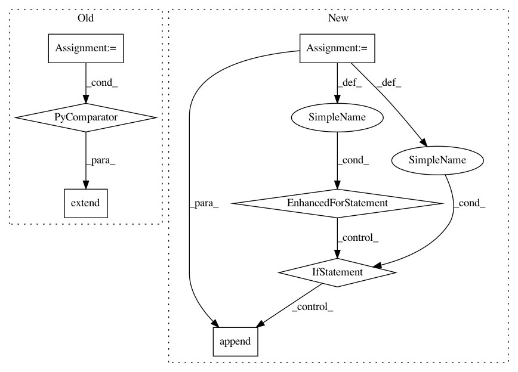

b9dc15ecef0393a55a953acff3c1d0278b19d9f5,src/fonduer/utils/utils_udf.py,,get_sparse_matrix,#Any#Any#Any#Any#,31
Before Change
for cand in cand_list:
values = _get_cand_values(cand, key_table)
if values:
cand_keys = values[0].keys
cand_values = values[0].values
indices.extend([keys.index(key) for key in cand_keys if key in keys])
data.extend(
[cand_values[i[0]] for i in enumerate(cand_keys) if i[1] in keys]
)
indptr.append(len(indices))
result.append(
After Change
for cand in cand_list:
values = _get_cand_values(cand, key_table)
if values:
for cand_key, cand_value in zip(values[0].keys, values[0].values):
if cand_key in keys_map:
indices.append(keys_map[cand_key])
data.append(cand_value)
indptr.append(len(indices))
result.append(
csr_matrix((data, indices, indptr), shape=(len(cand_list), len(keys_map)))
In pattern: SUPERPATTERN
Frequency: 3
Non-data size: 7
Instances
Project Name: HazyResearch/fonduer
Commit Name: b9dc15ecef0393a55a953acff3c1d0278b19d9f5
Time: 2018-09-01
Author: lwhsiao@stanford.edu
File Name: src/fonduer/utils/utils_udf.py
Class Name:
Method Name: get_sparse_matrix
Project Name: pantsbuild/pants
Commit Name: bfb1453dd22fd12c69e314e0995499e3f4835614
Time: 2012-10-31
Author: jsirois@twitter.com
File Name: src/python/twitter/pants/tasks/jvm_task.py
Class Name: JvmTask
Method Name: classpath
Project Name: home-assistant/home-assistant
Commit Name: 2a210607d392cac85bb82dd576877ddb192c85c5
Time: 2018-08-16
Author: prokhorov.max@outlook.com
File Name: homeassistant/components/wemo.py
Class Name:
Method Name: setup